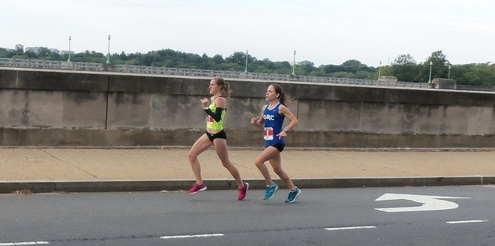

Georgetown Running Club
Lauren Woodall Roady
October 20, 1985 - December 8, 2012
A Duel on the Mall
The following is from a blog post written by GRC teammate Brian Young about Lauren's finest race:
The chance to be outside was reason enough reason to run 13.1 miles on the morning of September 19, 2012. In the hours before the start of the inaugural Navy-Air Force Half Marathon in Washington, D.C., months of relentless Mid-Atlantic heat and humidity gave way to temperatures in the mid-60s and a breeze that was barely strong enough to notice. This was not just weather. It was an invitation.
This race was to be my first serious effort since an injury in April and my plan was to take it easy during the first few miles around Hains Point and then gradually ease in to my marathon pace on the back half of the course, which ran up and down the Rock Creek Parkway. Pacers’ Shannon Miller, wearing a florescent Brooks singlet and arm warmers, passed me early and ran largely by herself for the first three miles. I saw no sign of the second place woman until I hit Haines Point and turned to see teammate Lauren Woodall, wearing Georgetown Running Club blue, over my left shoulder. Woodall’s urgent cadence signaled that she meant business and my plan to run a relaxed jaunt through the capital went out the window. We picked up the pace until Woodall closed the gap with Miller, latched on to her left shoulder, and settled into a group of seven runners (with me and a Capital Area Runner setting the pace). The race was on.
The paths that lead Miller and Woodall to this race could not have been more different. Miller ran four years of track and cross country at a major Division I program and boasted personal records of 16:55 and 34:10 in the 5K and 10K, respectively. And her successes continued after college, most notably with a 16th place finish at the Boston Marathon and a 2:45:20 (faster than the 2012 Olympic Trials Standard) at the Jacksonville Bank Marathon. Woodall, on the other hand, had been a recreational runner for most of her life and was thrilled to simply qualify for Boston, which she did on her first attempt (3:27:54 in the 2010 Marine Corps Marathon). As of the morning of September 19, 2012, Woodall’s 5k PR was 18:55, a record that she nearly broke en route to catch Miller at the five kilometer mark at the southern tip of Hains Point.
But the Lauren Woodall who had just re-established contact with the leader had come a long way in two years. Her marathon times steadily and significantly improved and she began training with the GRC after a chance conversation with Coach Jerry Alexander one night at a local track. She had been doing long repeats and grueling tempo runs and was looking to show her metal. As we passed the Lincoln Memorial and the sixth mile, the pack dissolved to me, Woodall, and Miller. Fearful of interfering in a two-way race for first– and feeling a little self-conscious – I picked up the pace and watched the duel unfold thirty meters behind me.
As she charged north up the Rock Creek Parkway, Woodall checked her Garmin with a frequency that seemed to question its accuracy – she was clicking off 6:15 miles, a pace that, in the not-so-distant past, she was able to sustain for only five kilometers. As the runners approached the Massachusetts Avenue Bridge near mile eight, there was a palpable sense among spectators that something special was in the works. A number of fans, who were greeting Miller and Woodall with cheers of “first women!” as they continued north on the Rock Creek Parkway, had crossed over the median to see the runners heading south after the turnaround. The race had become a dogfight, with Miller surging and Woodall covering and neither runner allowing herself to be gapped. The contest was neck-and-neck until the twelfth mile, when Woodall briefly slingshotted to the lead during a hairpin turn on Arlington Memorial Bridge.
Miller recovered and re-established contact by the time the athletes passed GRC runner Charlie Ban, who was photographing and covering the race for RunWashington, on Independence Avenue. With 600 meters to go, and onlookers shouting encouragement, Woodall and Miller broke into an all out, unrestrained kick. From his vantage point on Independence Avenue, Peter Roady, whom Woodall would marry only three weeks later, looked on with an expression of shock and unmitigated pride and called out “Come on, Lauren, you got it!” The women were giving it all they had. Woodall was squinting her eyes and her left arm was whipping farther across her torso than usual. Miller’s graceful gait looked like it might break down at any second. I crossed the finish line and immediately turned around to watch the runners as they careened to within steps of the tape.
No serious runner would miss a photo finish in a half marathon, especially one contested by a teammate. But I was especially invested in this outcome because Lauren’s journey to competitive distance running had so closely paralleled my own. Neither Lauren nor I had anything that resembled an impressive running pedigree. Although lifelong runners, we never ran in college and spent three years in our mid-20s focused on law school, running on treadmills occasionally for fitness. We moved to Washington to work as attorneys, a line of work that did not lend itself to serious training. The lure of the marathon inspired us to begin training seriously and a gradual improvement at that distance - Lauren’s more significant than mine -- provoked us to independently undertake the same experiment: to see if we could hang with post-collegiate runners whose accomplishments and athleticism far exceeded our own and in the process come as close to reaching our potential as our professional responsibilities would allow. By any right, neither Lauren nor I were in the same class as most of the GRC runners (a fact of which, despite the club’s complete lack of condescension, we were acutely aware). But the club and coach welcomed us and provided a training environment that yielded results that were far more successful than anything we could have accomplished on our own.
As the finish line approached, it had become clear that Woodall’s experiment with elite-level competition was an unqualified success. The sight of Lauren shoulder-to-shoulder with an elite athlete in the finishing stretch of a major half marathon validated my aspirations and helped to quell any doubts about whether I was wasting too much time and energy on a sport that would never pay the bills. But this is not a feel good story about an underdog who gave it her best shot and went home with the satisfaction of a job well done. To Lauren Woodall, this was a street fight aimed at achieving nothing less than the top spot of the podium. Woodall ran herself past her old point of exhaustion, but Miller’s vicious kick, let loose during a final sprint down 15th Street, was too much to overcome. Miller won the race in 1:21:40, one second faster than Woodall.
Neither woman rested on her laurels and both went on to have stellar fall seasons. In November, Miller finished the Richmond Marathon in 2:53. Woodall continued her improvement, setting PRs in the 5K (17:53) and the 10K (36:35). The heartbreaking tragedy that unfolded in Lexington, Kentucky on the evening of December 8, 2012 stood in stark contrast to Woodall’s triumphant performance at Club Cross Country Nationals earlier that afternoon, in which, although missing a scoring spot, she went so deep that she could not stand unassisted after the race. Her parents, who had driven from Tennessee, were on hand to see their daughter’s bravery.
Despite the ferocity of the competition, Miller, gracious in victory, congratulated Woodall on a breakthrough performance after the two crossed the finish line. I found Lauren in the shoot and my attempt at congratulations was cut short when, still gasping, she lamented not kicking earlier. But she eventually admitted that she was thrilled with her performance and headed toward the Washington Monument to join Peter.